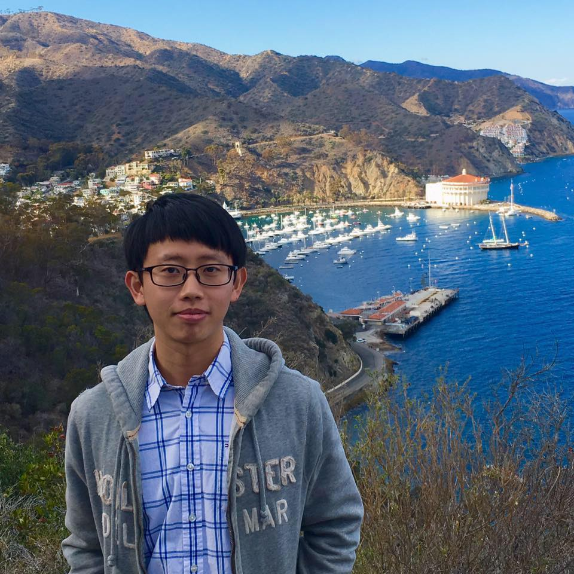
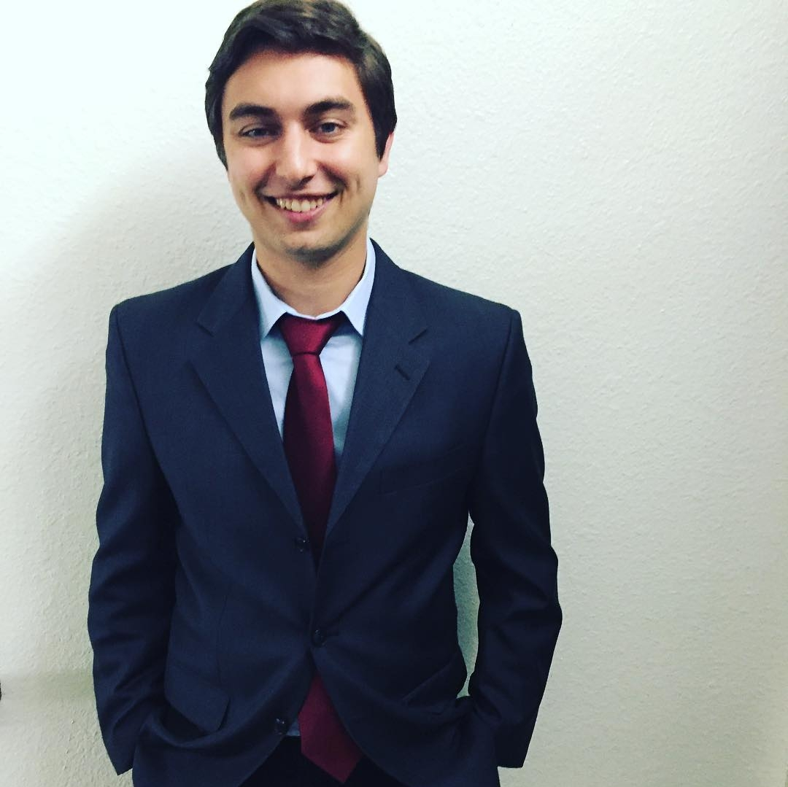

Hello, I am an undergraduate student at UCSD. I am studying Computer Science and Engineering. I
hope to be graduating at the end of this quarter. I'm also not very proficient in web-based
technologies. This class should resolve some of those issues, though.
I was born right here in San Diego, though the hospital I stayed at was torn down a long time ago.
I've pretty much stayed in California my entire life, though I've gone overseas to my parents' homeland
every now and then. Honestly, I love San Diego. It's nice and I do plan on getting a job here and staying
in-city.
Right now I'm taking CSE134b (obviously), CSE124, and CSE131. CSE124 seems pretty difficult so far because
we have to build a network on our own from the ground up, and CSE131 is Compilers which is always a pain in the
ass. It's the boogeyman of Computer Science majors.
All in all, I hope this project goes well for us. Here's a video I found interesting:
Yu-Ching Hu

Hi, I am a graduate student from Materials Science. Because I am interested in programming, I took many classes of computer science from last year. The reason why I take CSE134B is that I don't have much experience on front end design. So far, our group design a nice looking interface for our web application and learn to use firebase to host our web page. I believe at the end of this quarter, we will develop a good web application and have an unforgettable experience.
I was born in Taiwan. I came to the U.S. to pursue my master degree. After one and half years, I've learned many new skills and meet many new friends. I am so lucky that both my team member Ryan and JP are easygoing and always support each others although we all busy taking many classes
This quarter, I'm taking CSE110, CSE134B and CSE258. Hope that I can survive at the end of quarter :)
Ryan Ermert

Hi, I am currently attending University of California, San Diego as an undergraduate student. I am a Computer Science & Engineering Major B.S. and this is my last quarter. This is my third web developement class so I have some experience. Having said that, I'm not sure I've learned how to implement HTML "correctly." I hope this class will help me with that.
I was born in Grand Rapids, Michigan and moved to Vista, California when I was about 3 years old. Two years later, I moved to Carlsbad and have lived their ever since. I intend to graduate soon and get a job in either security or web developement. I enjoy tennis, soccer, coding and gaming.
This quarter, I'm taking CSE 134B, CSE 170, CSE 131 and CSE 107. The latter of the four is cryptography and is most likely my most difficult class. It is math based, but there is also some coding involved. Compilers is also a difficult class, but managable.
Moving forward, I'm excited to learn a lot about the correct methods to web developement. The following is a video I though was funny: